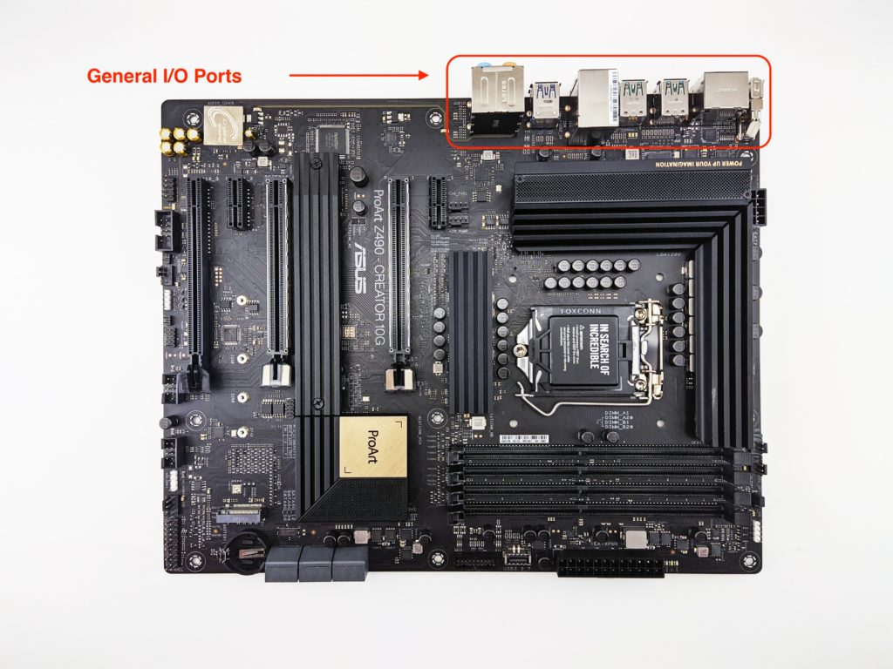
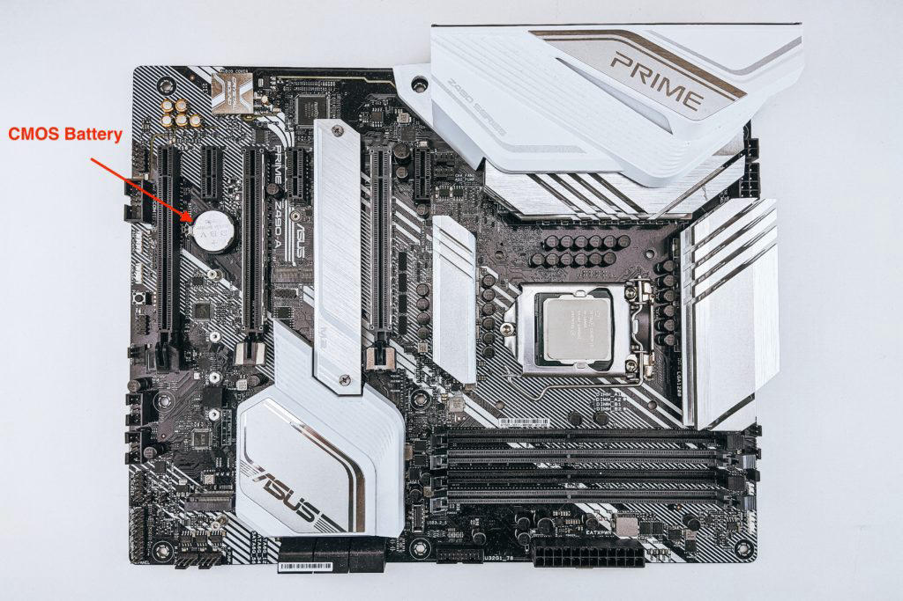

MOTHERBOARD
WHAT IS MOTHERBOARD
Motherboard is the main circuit board and main part of the computer system. The motherboard is the printed circuit board (PCB) that connects all the components of a general computer. It acts as the main frame to connect and connect various hardware devices, allowing them to communicate and work together. The motherboard is often referred to as the "backbone" or "core" of the computer.The motherboard provides the necessary infrastructure for the CPU (Central Processing Unit), memory, storage, expansion cards and other devices to interact and work as a unified system.
A motherboard is easily identified, as it is the largest board inside a computer’s casing. In tower computers, it stands vertically on the tower’s left or right side. While motherboards come in a variety of types and sizes—each designed to be placed in a different kind of computer and to work with different types of processors and memory—they all have the same basic components. The base of any motherboard is made of a hard sheet of non conductive material, usually plastic. On this sheet, thin lines of copper or aluminum foil, known as “traces,” form the circuits between the motherboard’s components. These traces lead to slots into which the computer’s central processing unit (CPU), random-access memory (RAM), and expansion cards (e.g., graphic cards) are placed. The motherboard also has sockets for connecting to hard drives, disk drives, and front panel ports via cables and wires. Finally, the motherboard has ports that allow it to connect to a computer’s external components, such as its monitor, keyboard, and mouse.
Motherboard Components and Their Functions.
Not all motherboards are built to do the same thing. Depending on the board's application, there may be more or less connection options compared to another board for another application. There are some components, however, that are generally found on most, if not all, motherboards.The motherboard is a complex circuit board that houses various components, each with a specific role in facilitating the functioning of a computer system. Here are the key components of a motherboard:
CPU Socket:
- The CPU socket is where the Central Processing Unit (CPU), often considered the brain of the computer, is installed. It provides the interface for the CPU to connect with the rest of the system.
RAM Slots:
- Random Access Memory (RAM) slots hold memory modules that provide the system with volatile, high-speed storage for active processes. RAM is crucial for the computer's performance and multitasking capabilities.
Expansion Slots:
- PCIe (Peripheral Component Interconnect Express) slots allow the installation of expansion cards, such as graphics cards, sound cards, and networking cards. These cards enhance the capabilities of the system.
PCIe (Peripheral Component Interconnect Express) slots are essential expansion slots on your motherboard that allow you to connect various high-speed components to your PC. They provide a dedicated pathway for data to travel between these components and the CPU, significantly boosting performance compared to older standards. Here's a deeper dive into PCIe slots:
What do PCIe slots do?
Imagine your PCIe slots as express lanes on a highway. The CPU is the central hub, and data travels through these lanes to and from various components like:
- Graphics Cards
- Network Cards
- Storage Controllers
- Sound Cards.
Chipset:
- The chipset consists of multiple integrated circuits that manage data flow between the CPU, RAM, storage devices, and peripherals. It plays a vital role in coordinating communication among various components.
The chipset, often referred to as the platform controller hub (PCH), is a vital component on your motherboard that acts like the traffic controller for data flow between various parts of your system. It's not a single chip, but rather a set of integrated circuits working together to manage communication. Here's a breakdown of the key functions and characteristics of chipsets:
What Does a Chipset Do?
Imagine your motherboard as a bustling city. The CPU is the central government building, and data is like vehicles traveling between different departments (components). The chipset acts like the traffic control center, ensuring smooth data flow on these designated pathways:
- Northbridge (Obsolete Term): This older term referred to the part of the chipset that communicated directly with the CPU and handled high-speed connections like RAM and the graphics card (if present on the northbridge). In modern chipsets, these functions are often integrated into the CPU itself.
- Southbridge: This section of the chipset manages communication with slower peripherals like storage drives (SATA ports), USB ports, network cards, and onboard audio.
Chipset Manufacturers:
The two main chipset manufacturers for consumer PCs are:
- Intel: Their chipsets are typically named with a letter-number combination (e.g., Z690, B660).
- AMD: AMD chipsets often use a letter-number-letter combination (e.g., B550, X670).
BIOS/UEFI Firmware:
BIOS:
- The Basic Input/Output System (BIOS) or Unified Extensible Firmware Interface (UEFI) is firmware stored on a chip on the motherboard. It initializes hardware during the boot process and provides a basic interface for configuring system settings.
- Both BIOS (Basic Input/Output System) and UEFI (Unified Extensible Firmware Interface) are firmware programs that play a critical role during the startup process of your computer. They act as the bridge between the hardware and the operating system, performing initial checks and providing some low-level configuration options.
- BIOS offers a text-based interface with basic functionalities like:
- System time and date configuration
- Hardware detection (checking if your CPU, RAM, and storage are functional)
- Boot device selection (choosing which drive to boot your operating system from)
- Limited overclocking options (on some motherboards)
UEFI (Unified Extensible Firmware Interface):
- The Modern Successor: UEFI is the more modern and advanced alternative to BIOS, gradually replacing it on most new motherboards.
- Enhanced Features: UEFI boasts a user-friendly graphical
interface with features like:
- Mouse and keyboard support for easier navigation
- Support for larger hard drives (beyond the limitations of BIOS)
- Secure Boot for enhanced system security
- Networking capabilities (allowing for internet updates)
- More advanced overclocking options (on some motherboards)
Power Connectors:
- Power connectors include the 24-pin ATX power connector that supplies power to the motherboard and its components, as well as the 8-pin EPS connector that provides additional power to the CPU.
Input/Output Ports:
- Various ports, such as USB, HDMI, Display Port, audio jacks, and networking ports, allow connectivity with external devices and peripherals.
- On each circuit board, there are various input and output ports. The connections generally include multiple USB connections, a few display connections (HDMI, USB-C, Thunderbolt, Display Port), and perhaps some networking I/O like an Ethernet connection. These ports allow external devices to interface with the system as a whole. 
CMOS Battery
The CMOS battery, also called memory battery, clock battery, or real-time clock (RTC), is generally a CR2032 lithium coin cell. The purpose of the battery is to store the board's BIOS (Basic Input/Output System) settings when the motherboard is entirely powered off. This way, the BIOS is not lost when no power is supplied to the board.

Storage Interfaces:
- SATA connectors enable the connection of storage devices like hard disk drives (HDDs) and solid-state drives (SSDs). M.2 slots may also be present for faster NVMe SSDs.
Storage connector options for motherboards can vary depending on the motherboard form factor (ATX, Micro ATX, Mini-ITX) but here's a breakdown of the common types you'll encounter:
1. SATA (Serial ATA):
- The most widely used storage connector for traditional hard disk drives (HDDs) and solid-state drives (SSDs).
- SATA offers good data transfer speeds (SATA III offers up to 6 Gbps), suitable for most storage needs.
- Most motherboards, regardless of form factor, will have multiple SATA ports (typically 2-6) to connect multiple storage drives.
2. M.2 (NGFF - Next Generation Form Factor):
- A high-speed slot for NVMe (Non-Volatile Memory express) solid-state drives.
- M.2 offers significantly faster data transfer speeds compared to SATA, ideal for maximizing the performance of NVMe SSDs.
- M.2 slots are becoming increasingly common, but their availability can
vary depending on the motherboard form factor:
- ATX motherboards typically have multiple M.2 slots.
- Micro ATX boards may have 1-2 M.2 slots.
- Mini-ITX boards often have just 1 M.2 slot, if any, due to space constraints.
3. U.2 (Formerly SFF-8639):
- A less common connector primarily used in high-performance workstations and servers.
- Offers even faster data transfer speeds than M.2 but is not as widely adopted for consumer PCs.
Choosing the Right Storage Connector:
The choice of storage connector depends on several factors:
- Storage Drive Type: Traditional HDDs or SSDs use SATA connections, while high-performance NVMe SSDs benefit from M.2 slots.
- Motherboard Compatibility: Ensure your motherboard has the storage connector type that matches your chosen storage drive.
- Performance Needs: If raw speed is a priority, an M.2 NVMe SSD is the way to go. However, SATA SSDs and HDDs offer a good balance of performance and affordability for most users.
- Form Factor: Consider the limitations of smaller form factors like Mini-ITX which might have fewer M.2 slots.
Additional Considerations:
- Number of Storage Connectors: The number of available connectors will determine how many storage drives you can connect to your motherboard.
- SATA vs. NVMe SSDs: While NVMe offers superior speed, SATA SSDs are still significantly faster than HDDs and more afforda
Graphics:
- Onboard graphics processors or integrated graphics provide basic video output. Dedicated slots for graphics cards allow the installation of more powerful GPUs for gaming or professional applications.
Cooling Solutions:
- Heat sinks and sometimes fans are employed to dissipate heat generated by the CPU and other components to prevent overheating.
Clock Generator:
- The clock generator produces signals that synchronize the timing of operations within the motherboard, ensuring that different components work in harmony.
In the world of computer hardware, form factor refers to the physical size, shape, and layout of
a component, particularly motherboards and computer cases. It dictates
compatibility with other components and influences the overall size and
functionality of your system. Here's a breakdown of the most common motherboard
form factors:
1. ATX (Advanced Technology Extended):
- The Standard Bearer: ATX is the most popular and widely used motherboard form factor. It offers a good balance of size, features, and expand-ability.
- Size: ATX motherboards typically measure 12" x 9.6" (305 x 244 mm).
- Features: ATX boards generally have the most expansion slots (PCIe, M.2) for adding graphics cards, additional storage, and other components. They also provide a good selection of I/O ports (USB, HDMI, etc.) to connect various peripherals.
- Suitability: ATX is a versatile choice for gamer's, content creators, and anyone who needs a powerful and expandable PC. However, its larger size might not be ideal for compact builds.
2. Micro ATX (µATX):
- The Space Saver: Micro ATX (often pronounced "micro-ATX") is a smaller version of the ATX form factor, offering a more compact solution for smaller cases.
- Size: Micro ATX boards typically measure 9.3" x 7.5" (244 x 190 mm).
- Features: While smaller, µATX boards still pack a punch, often featuring enough expansion slots and I/O ports for most users. However, they may have fewer options compared to full-size ATX boards.
- Suitability: Micro ATX is a great choice for budget-friendly builds, home theater PCs, or anyone looking for a more compact system without sacrificing too much expand-ability.
3. Mini-ITX (Mini Information Technology Extended):
- The Tiny Titan: Mini-ITX is the smallest and most compact motherboard form factor. It's ideal for building ultra-small form factor (SFF) PCs.
- Size: Mini-ITX boards are tiny, typically measuring 6.7" x 6.7" (170 x 170 mm).
- Features: Due to their size, Mini-ITX boards typically have limited expansion slots and I/O ports. They are often suited for integrated graphics or minimalistic builds that prioritize a small footprint.
- Suitability: Mini-ITX is perfect for building small, portable PCs or HTPCs (Home Theater PCs) for a minimalist living room setup. However, keep in mind the limitations in expandability.
Choosing the Right Form Factor:
Here are some key factors to consider when selecting a motherboard form factor:
- Compatibility: Ensure your chosen case supports the motherboard's form factor.
- Space Constraints: Consider the available space in your chosen case.
- Expandability Needs: Think about how many expansion slots and features you need (graphics card, additional storage).
- Budget: ATX boards tend to be more affordable due to higher production volume.
Beyond the Basics:
While these are the most common form factors, there are a few less common ones like Extended ATX (EATX) for high-end workstations and Mini STX, an even smaller form factor than Mini-ITX.
CPU SOCKET SIZES:
CPU socket sizes refer to the physical layout and pin configuration where the CPU connects to the motherboard. It's crucial for ensuring compatibility between your chosen CPU and motherboard. Here's a breakdown of some common CPU socket types:
Intel Sockets:
- LGA (Land Grid Array): This is the dominant socket type
used by Intel for their desktop processors since 2 thousand and 4. The
CPU has an array of small contact pins that connect to corresponding pads
on the motherboard. Here are some notable examples:
- LGA 1151: Compatible with 6th to 8th generation Intel Core processors (Coffee Lake and Kaby Lake).
- LGA 1200: Supports 10th generation Intel Core processors (Comet Lake-S).
- LGA 1700: Current socket for 11th and 12th generation Intel Core processors (Rocket Lake-S and Alder Lake).
- Socket LGA 775: An older socket used for Intel Core 2 processors (pre-2007).
AMD Sockets:
- AM4 (PGA - Pin Grid Array): This has been AMD's primary socket type since 2016, supporting a wide range of Ryzen processors. In contrast to LGA, the pins are on the CPU itself, fitting into holes on the motherboard.
- AM5: The latest socket from AMD, designed for their new Zen 4 architecture Ryzen 7000 series processors (launched in 2022). While still PGA based, it's not compatible with older AM4 coolers due to a different mounting mechanism.
- Older AMD Sockets: AMD has used various socket types in the past, such as FM2+ and AM3+, which are no longer relevant for current CPU s.
Importance of Choosing the Right Socket:
- Ensures Compatibility: Using a CPU with the incorrect socket type will physically prevent it from fitting onto the motherboard.
- Future Upgrades: Consider the socket's compatibility with future CPU generations if you plan to upgrade later.
Finding Socket Information:
- CPU and Motherboard Manufacturers' Websites: Both CPU and motherboard manufacturers will list the compatible socket type in their product specifications.
- Online Retailers: Reputable online retailers like Newegg or Amazon will often mention the socket type on the product pages for CPU s and motherboards.
Additional Considerations:
- Socket Naming Conventions: Socket names can sometimes be cryptic. Look for the manufacturer (LGA for Intel, AM4 for AMD) followed by a number (e.g., LGA 1700).
- Socket Longevity: Newer socket types may offer support for multiple CPU generations, while older ones might be limited to a single generation.